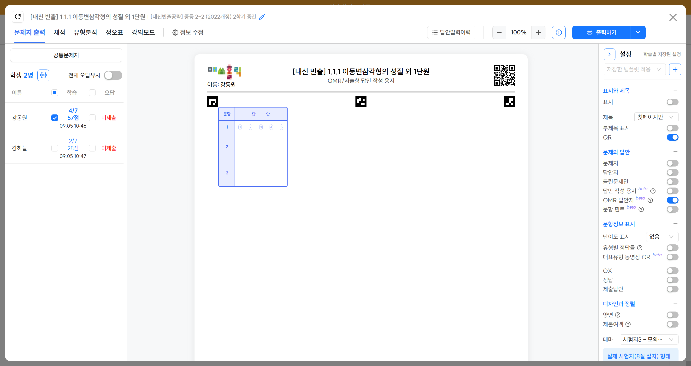

NEW
AI 서술형 첨삭
Ⅱ. OMR답안지 출력
시험대비 실전감각을 키우기 위해 OMR답안지로 학습을 진행합니다.



{{ badge }}
OMR답안지 출력
{{ title }}
{{ desc }}
표시된 곳을 눌러 다음 단계로 이동합니다.
키보드 좌·우 방향키로도 이동할 수 있습니다.
Ⅱ. OMR답안지 출력, 끝까지 확인했어요
이제 학생이 제출한 OMR 답안을 입력하고 AI 서술형 채점까지 확인해 볼 차례입니다.